Organizations
Factions & Organizations
The true power in Sharn isn't held by any single entity. It flows through an ecosystem of detective agencies, crime syndicates, academic institutions, and imperial bureaucracies.
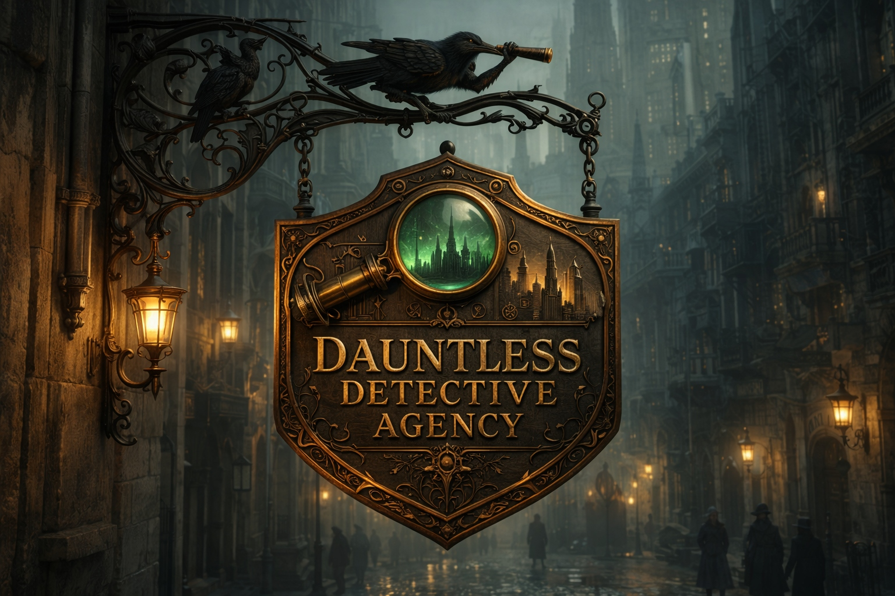
The Dauntless Agency
From security contractors aboard the Lightning Swift to archaeological rescuers beneath the Cogs to Ascension Race champions, the Dauntless Agency has become Sharn's most visible adventuring outfit. Core members: Adina (Tiefling archaeologist, House Hanissa), Kleet (Kenku investigator), Vekel Vekelson (Human storyteller/bard), Jasmine Jazzman (Kenku musician), and Plog (Goblin mechanic). They've also launched Dauntless Publishing in Lower Dura.
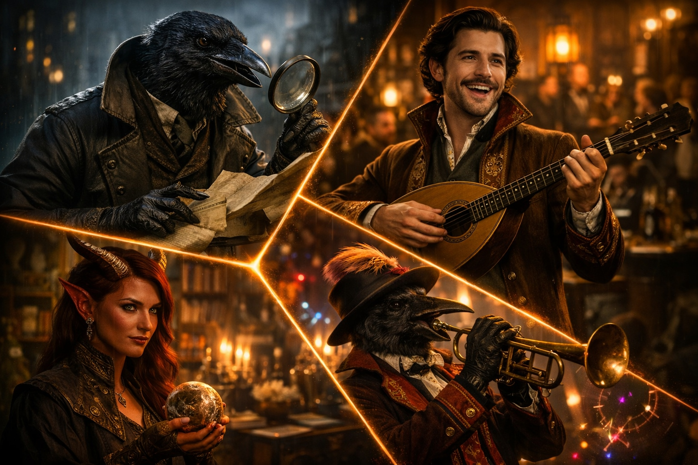
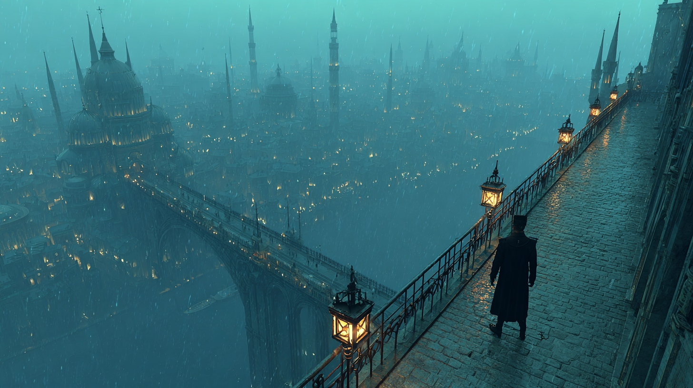
The Sharn Watch
The city's police force, hemorrhaging officers. Lower districts go days without patrols. Captain Falastari leads investigations but is chronically under-resourced. The Watch is failing the lower wards.
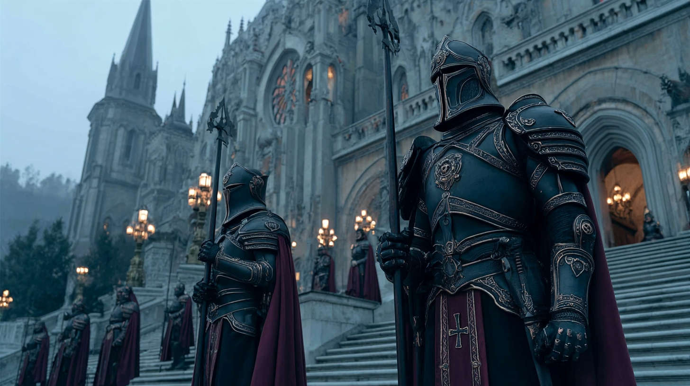
Imperial Guard
The Emperor's enforcers. Visited Lord Akmenos's estate before his "retirement." Quelled dissident protests in Skyway. Arrested the Gear-Breaker bomber. They answer to the throne, not the law.
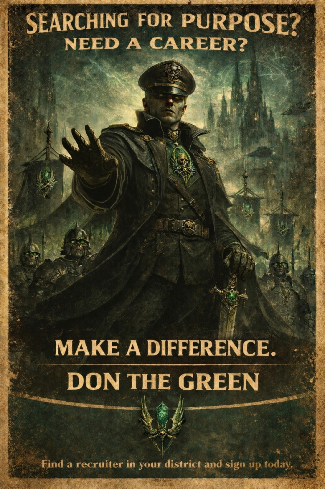
The Emerald Claw
"Searching for purpose? Need a career? The Emerald Claw wants you." Their recruitment ads appeared in the February 2026 issue. An ominous sign of a growing paramilitary presence.
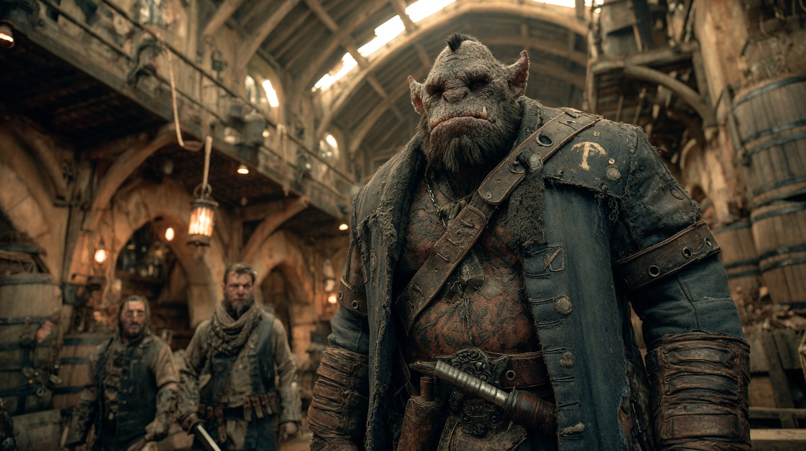
Daask
Criminal enforcers who breached the Dauntless Agency's hangar before the Ascension Race, demanding protection money. A monstrous crime syndicate with reach into Lower Dura.
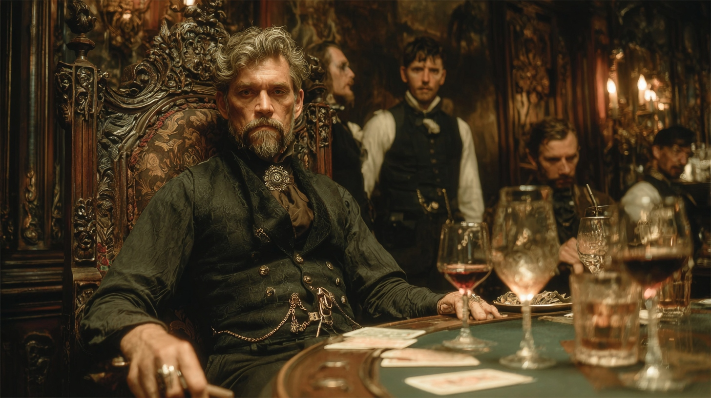
Boromar Clan
The organized crime family that collected Lianna ir'Clarn's Ascension Race winnings to settle her father's debts. Overlaps with the noble House Boromar.
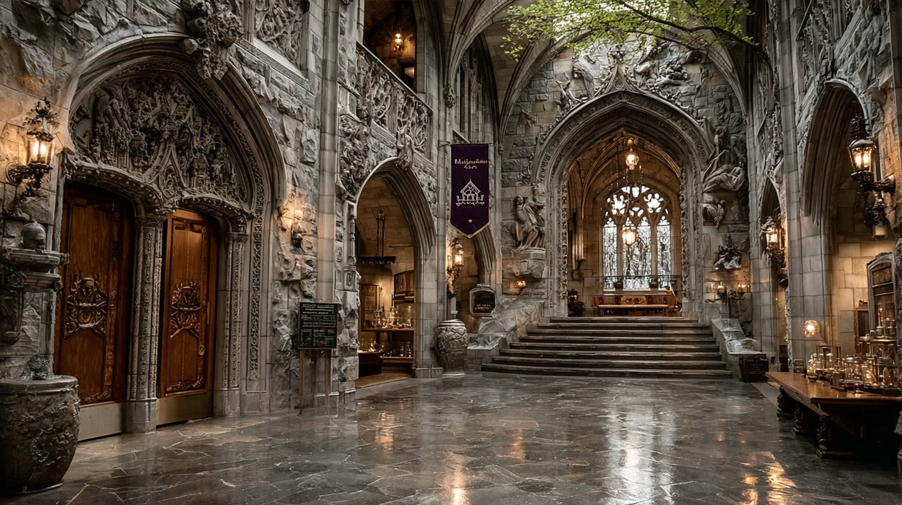
Morgrave University
Academic institution entangled in politics: Vyrune-funded faculty, student protests, faculty murders (Kaelem and Lorianna killed by Councilor ir'Tain), and the Whisperstone expedition beneath the Cogs.
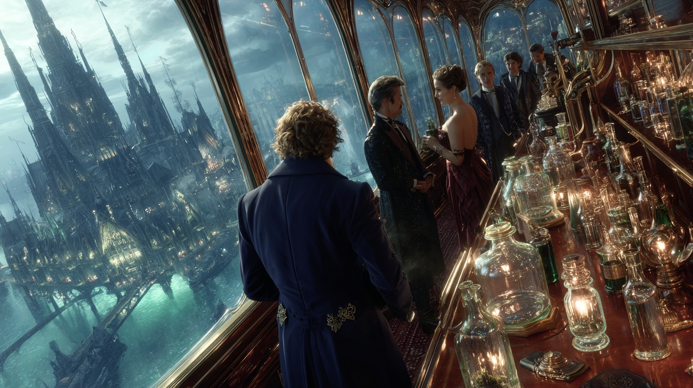
PCA&ARI
The Pan-City Alchemical & Artifice Research Institute. Ultra-exclusive previews aboard airships, bomb plots, and noble houses vying for exclusive rights to their innovations.
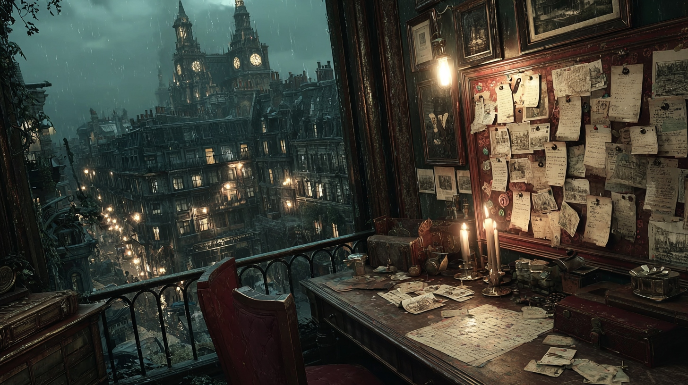
Quade & Associates
Investigator Quade Umbrielle tracks the Tears of the Angels theft and the mystery climber in Upper Central. Partners with the Dauntless Agency on cases.
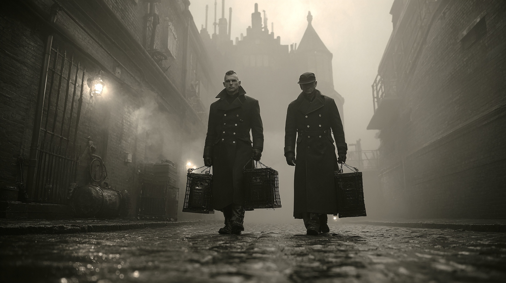
Tarkanan Pest Control
"We've numerous traps ready for the rats we're hunting." Their ominous language regarding the Tavick's Landing "rat infestation" suggests they may be hunting more than vermin.
Framework Full faction profiles to follow.